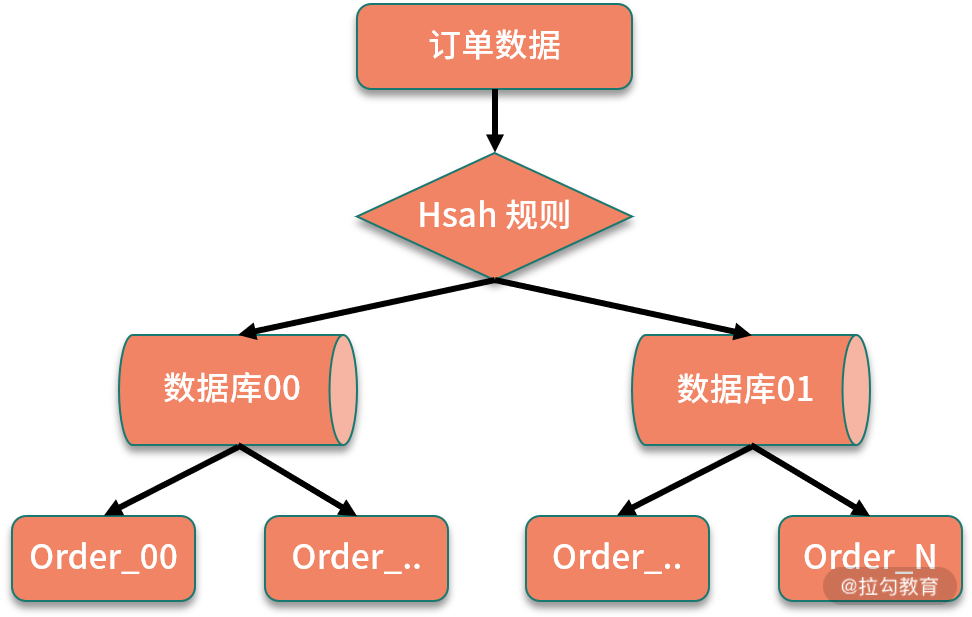
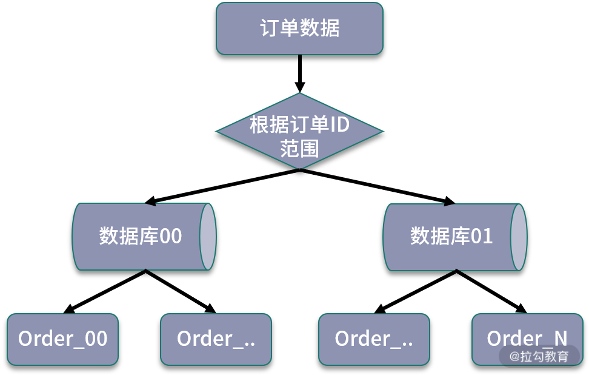
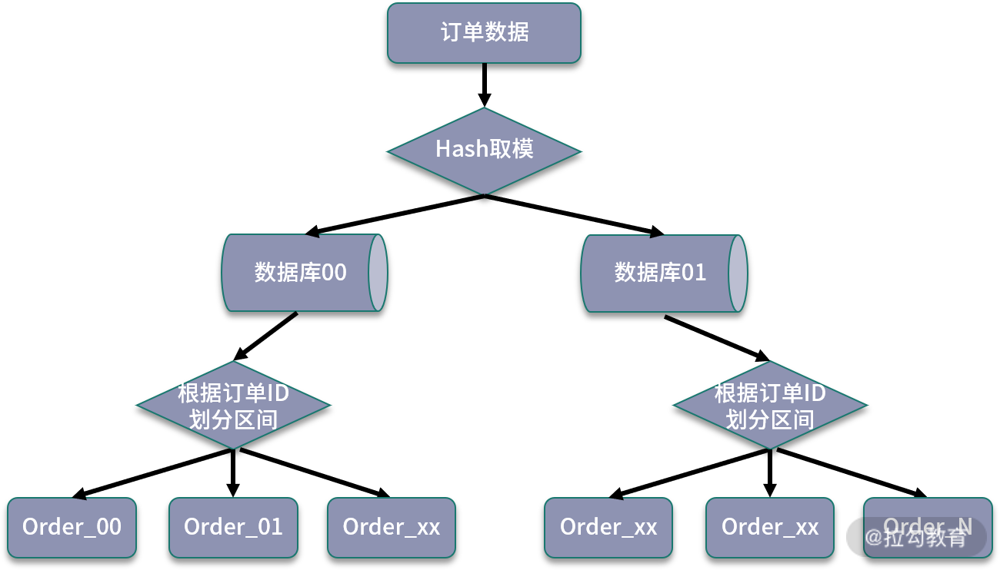

- 00 开篇词：搭建分布式知识体系，挑战高薪 Offer.md.html
- 01 如何证明分布式系统的 CAP 理论？.md.html
- 02 不同数据一致性模型有哪些应用？.md.html
- 03 如何透彻理解 Paxos 算法？.md.html
- 04 ZooKeeper 如何保证数据一致性？.md.html
- 05 共识问题：区块链如何确认记账权？.md.html
- 06 如何准备一线互联网公司面试？.md.html
- 07 分布式事务有哪些解决方案？.md.html
- 08 对比两阶段提交，三阶段协议有哪些改进？.md.html
- 09 MySQL 数据库如何实现 XA 规范？.md.html
- 10 如何在业务中体现 TCC 事务模型？.md.html
- 11 分布式锁有哪些应用场景和实现？.md.html
- 12 如何使用 Redis 快速实现分布式锁？.md.html
- 13 分布式事务考点梳理 + 高频面试题.md.html
- 14 如何理解 RPC 远程服务调用？.md.html
- 15 为什么微服务需要 API 网关？.md.html
- 16 如何实现服务注册与发现？.md.html
- 17 如何实现分布式调用跟踪？.md.html
- 18 分布式下如何实现配置管理？.md.html
- 19 容器化升级对服务有哪些影响？.md.html
- 20 ServiceMesh：服务网格有哪些应用？.md.html
- 21 Dubbo vs Spring Cloud：两大技术栈如何选型？.md.html
- 22 分布式服务考点梳理 + 高频面试题.md.html
- 23 读写分离如何在业务中落地？.md.html
- 24 为什么需要分库分表，如何实现？.md.html
- 25 存储拆分后，如何解决唯一主键问题？.md.html
- 26 分库分表以后，如何实现扩容？.md.html
- 27 NoSQL 数据库有哪些典型应用？.md.html
- 28 ElasticSearch 是如何建立索引的？.md.html
- 29 分布式存储考点梳理 + 高频面试题.md.html
- 30 消息队列有哪些应用场景？.md.html
- 31 集群消费和广播消费有什么区别？.md.html
- 32 业务上需要顺序消费，怎么保证时序性？.md.html
- 33 消息幂等：如何保证消息不被重复消费？.md.html
- 34 高可用：如何实现消息队列的 HA？.md.html
- 35 消息队列选型：Kafka 如何实现高性能？.md.html
- 36 消息队列选型：RocketMQ 适用哪些场景？.md.html
- 37 消息队列考点梳理 + 高频面试题.md.html
- 38 不止业务缓存，分布式系统中还有哪些缓存？.md.html
- 39 如何避免缓存穿透、缓存击穿、缓存雪崩？.md.html
- 40 经典问题：先更新数据库，还是先更新缓存？.md.html
- 41 失效策略：缓存过期都有哪些策略？.md.html
- 42 负载均衡：一致性哈希解决了哪些问题？.md.html
- 43 缓存高可用：缓存如何保证高可用？.md.html
- 44 分布式缓存考点梳理 + 高频面试题.md.html
- 45 从双十一看高可用的保障方式.md.html
- 46 高并发场景下如何实现系统限流？.md.html
- 47 降级和熔断：如何增强服务稳定性？.md.html
- 48 如何选择适合业务的负载均衡策略？.md.html
- 49 线上服务有哪些稳定性指标？.md.html
- 50 分布式下有哪些好用的监控组件？.md.html
- 51 分布式下如何实现统一日志系统？.md.html
- 52 分布式路漫漫，厚积薄发才是王道.md.html
26 分库分表以后，如何实现扩容？
在实际开发中，数据库的扩容和不同的分库分表规则直接相关，今天我们从系统设计的角度，抽象了一个项目开发中出现的业务场景，从数据库设计、路由规则，以及数据迁移方案的角度进行讨论。
从业务场景出发进行讨论
假设这样一个业务场景，现在要设计电商网站的订单数据库模块，经过对业务增长的估算，预估三年后，数据规模可能达到 6000 万，每日订单数会超过 10 万。
首先选择存储实现，订单作为电商业务的核心数据，应该尽量避免数据丢失，并且对数据一致性有强要求，肯定是选择支持事务的关系型数据库，比如使用 MySQL 及 InnoDB 存储引擎。
然后是数据库的高可用，订单数据是典型读多写少的数据，不仅要面向消费者端的读请求，内部也有很多上下游关联的业务模块在调用，针对订单进行数据查询的调用量会非常大。基于这一点，我们在业务中配置基于主从复制的读写分离，并且设置多个从库，提高数据安全。
最后是数据规模，6000 万的数据量，显然超出了单表的承受范围，参考《阿里巴巴 Java 开发手册》中「单表行数超过 500 万行」进行分表的建议，此时需要考虑进行分库分表，那么如何设计路由规则和拆分方案呢？接下来会对此展开讨论。
路由规则与扩容方案
现在我们考虑 3 种路由规则：对主键进行哈希取模、基于数据范围进行路由、结合哈希和数据范围的分库分表规则。
1. 哈希取模的方式
哈希取模是分库分表中最常见的一种方案，也就是根据不同的业务主键输入，对数据库进行取模，得到插入数据的位置。
6000 万的数据规模，我们按照单表承载百万数量级来拆分，拆分成 64 张表，进一步可以把 64 张表拆分到两个数据库中，每个库中配置 32 张表。当新订单创建时，首先生成订单 ID，对数据库个数取模，计算对应访问的数据库；接下来对数据表取模，计算路由到的数据表，当处理查询操作时，也通过同样的规则处理，这样就实现了通过订单 ID 定位到具体数据表。
 规则示意图
通过哈希取模的方式进行路由，优点是数据拆分比较均匀，但缺点是不利于后面的扩容。假设我们的订单增长速度超出预估，数据规模很快达到了几亿的数量级，原先的数据表已经不满足性能要求，数据库需要继续进行拆分。
数据库拆分以后，订单库和表的数量都需要调整，路由规则也需要调整，为了适配新的分库分表规则，保证数据的读写正常，不可避免地要进行数据迁移，具体的操作，可以分为停机迁移和不停机迁移两种方式。
- 停机迁移
停机迁移的方式比较简单，比如我们在使用一些网站或者应用时，经常会收到某段时间内暂停服务的通知，一般是在这段时间内，完成数据迁移，将历史数据按照新的规则重新分配到新的存储中，然后切换服务。
- 不停机迁移
不停机迁移也就是常说的动态扩容，依赖业务上的双写操作实现，需要同时处理存量和增量数据，并且做好各种数据校验。
一般来说，具体的数据库扩容方式有基于原有存储增加节点，以及重新部署一套新的数据库两种策略，针对不同的扩容方式，需要不同的迁移方案和双写策略支持。
如果重新部署新的数据库存储，可以粗略地分为以下的步骤：
- 创建一套新的订单数据库；
- 在某个时间点上，将历史数据按照新的路由规则分配到新的数据库中；
- 在旧数据库的操作中开启双写，同时写入到两个数据库；
- 用新的读写服务逐步替代旧服务，同步进行数据不一致校验，最后完成全面切流。
这是一个非常简化的流程，实际开发中要处理的细节有很多，感兴趣的同学可以去了解下数据迁移的 ETL 等标准化流程。
2. 基于数据范围进行拆分
基于数据范围进行路由，通常是根据特定的字段进行划分不同区间，对订单表进行拆分中，如果基于数据范围路由，可以按照订单 ID 进行范围的划分。
同样是拆分成 64 张数据表，可以把订单 ID 在 3000万 以下的数据划分到第一个订单库，3000 万以上的数据划分到第二个订单库，在每个数据库中，继续按照每张表 100万 的范围进行划分。
 规则示意图
可以看到，基于数据范围进行路由的规则，当进行扩容时，可以直接增加新的存储，将新生成的数据区间映射到新添加的存储节点中，不需要进行节点之间的调整，也不需要迁移历史数据。
但是这种方式的缺点就是数据访问不均匀。如果按照这种规则，另外一个数据库在很长一段时间内都得不到应用，导致数据节点负荷不均，在极端情况下，当前热点库可能出现性能瓶颈，无法发挥分库分表带来的性能优势。
3. 结合数据范围和哈希取模
现在考虑，如果结合以上两种方式数据范围和哈希取模，那么是不是可以实现数据均匀分布，也可以更好地进行扩容？
我们设计这样的一个路由规则，首先对订单 ID 进行哈希取模，然后对取模后的数据再次进行范围分区。
 订单数据库进一步拆分
可以看到，通过哈希取模结合数据区间的方式，可以比较好地平衡两种路由方案的优缺点。当数据写入时，首先通过一次取模，计算出一个数据库，然后使用订单 ID 的范围，进行二次计算，将数据分散到不同的数据表中。
这种方式避免了单纯基于数据范围可能出现的热点存储，并且在后期扩展时，可以直接增加对应的扩展表，避免了复杂的数据迁移工作。
上面我们通过一个业务场景设计，思考了分库分表下的几种路由规则和扩容方案，这是一个开放性问题，思路要比方案更重要，而实际业务也要比这个复杂得多，你可以结合项目实践，思考在你负责的模块中，是如何设计路由规则，以及可以如何进行数据扩容的。
总结
这一课时从一个真实业务场景的设计出发，分享了分库分表不同路由规则的设计，对应的优缺点，以及对扩容方式的影响。
今天的问题如果出现在面试中，可以认为是一个典型的系统设计类问题，那么回答系统设计类问题，有哪些要注意的点呢？
首先，系统设计类问题出现在面试中，很重要的一方面是考察沟通，要和面试官确认整体的数据规模，输入和输出，明确系统设计的边界，比如数据规模不同，直接影响数据库表的设计方式。
其次，是找到主要问题，理解系统的瓶颈，然后就可以应用各种系统设计的技巧，进行各个业务层的设计。